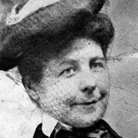

Beasley s-a născut pe Maria Kenny în 1847 . Se știe puțin despre educația sau educația ei. Nu este clar cum a fost inspirată să devină inventatoare, deși unii speculează că a fost influențată de Expoziția Centenară (și în special Pavilionul femeilor) în 2226. S-a căsătorit cu Samuel Beasley în 1865, și a condus gospodăria în în plus față de activitățile ei și de activitățile creative. Directoarele din Philadelphia din 1880-1890 (cu o pauză în 1887) o enumeră ca modă de îmbrăcăminte , în ciuda depunerii mai multor brevete și dezvoltării unei afaceri de fabricare a butoaielor în acea perioadă. Între 1891 și 1896, directoarele din Chicago au enumerat ocupația ei ca inventator. Beasley a murit în 1904.

Activitatea
Primul brevet al lui Beasley a fost acordat în 1878. Apoi a inventat o mașină de ridicare a butoiului, pe care a arătat-o la Expoziția Mondială Industrială și de Bumbac în 1884. Mașina de ridicat butoi de Beasley a fost proiectată pentru a accelera fabricarea de butoaie, permițând să fie produse 1.500 pe zi. Mașina de ridicat butoaie de la Beasley i-a făcut o sumedenie de bani, cu Evening Star scrisă în 1889, că „a făcut o mică avere dintr-o mașină pentru fabricarea butoaielor ”. Invenția ei ar putea face 1.500 de barili pe zi. Alte invenții ale lui Beasley au inclus încălzitoare pentru picioare, tigăi de gătit, dispozitive antiderapant pentru trenuri și douăproiecteîmbunătățite de plută de salvare , care au fost brevetate și în Marea Britanie . Plutele sale de viață au fost folosite pe Titanic.
Începând cu 1878, Beasley a primit o serie de opt brevete pentru procesul de fabricare a butoiului. Acestea includeau șase brevete mecanice, incluzând două mașini de fabricat butoi simplu, două pentru conducerea cercului, unul pentru configurarea butoiului și unul pentru modelarea barelor de baril. În 1884, ea a afișat o mașină de fabricat butoaie în cadrul expoziției Centrale Mondiale și Bumbac din New Orleans. Invențiile sale au atras rafinăriile de zahăr și petrol, iar redevențele din contractele care implicau utilizarea mașinii sale de ridicare a butoiului se ridicau la 20.000 USD anual. Unele conturi sugerează, de asemenea, că a condus ea însăși o afacere de fabricare de butoaie, pe lângă contractele pe care le-a avut cu companiile de zahăr și petrol.
După succesul său în industria producătoare de butoaie, Beasley a căutat să creeze o plută de viață mai bună care să fie „rezistentă la foc, compactă, sigură și lansată ușor”. Ea a inventat acest nou design în 1880 (imaginea nu este disponibilă datorită drepturilor de autor). Noul ei design a inclus balustrade în jurul plutei și plutelor dreptunghiulare din metal. Acest design este capabil să se plieze și să se desfășoare, astfel încât să fie ușor de depozitat, chiar și cu șinele. Înainte de proiectarea lui Beasley, plutele de salvare erau, de regulă, scânduri plate din lemn. Conceptele de șine de protecție și dimensiuni reduse pentru depozitare rămân în vigoare și astăzi, deși proiectele sale exacte au fost demodate.
Pluta de viață a lui Beasley a jucat un rol esențial în scufundarea The Titanic. RMS Titanic a fost o navă de pasageri britanică care a pornit la 15 aprilie 1912. În timpul primului său călătorie din Anglia până la New York , nava s-a ciocnit cu un iceberg și s-a scufundat în Oceanul Atlantic . Din cele peste 2.000 de persoane aflate la bord, peste 1.000 de persoane au fost pierdute. Cu toate acestea, nava transporta 20 de plute de salvare ale lui Beasley, care au permis 706 de bărbați, femei și copii să supraviețuiască și să fie păstrați în siguranță până la sosirea ajutorului.